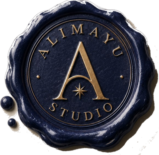

Alimayu StudioAllison Alimayu, PhD — board director candidate: governance, financial oversight, and regulatory affairs, with a fiduciary record spanning public, federal, national, and nonprofit boards.
Every seat below carried fiduciary oversight of executive leadership — the core function of a corporate board. Select a category to see the record.
Elected to the Nevada System of Higher Education Board of Regents in 2013, Allison served as Vice Chair of the Board and Chair of the Audit and Compliance Committee through 2019. In that role, she held the board's fiduciary oversight of the Chancellor and system executive leadership — a governance function she has exercised on every board she has served.
She led a redesign of NSHE's audit and enterprise risk management framework, directed a $25 million distribution from the Operating Pool Reserve to clear a backlog of internal audit follow-up, and reduced open audit exceptions by 68 percent, earning the Distinguished Public Service Award in 2019.
She published on audit committee governance in the College and University Auditor Journal and Trustee Quarterly, and presented at the Association of College and University Auditors' national conference.
Appointed by the Secretary of Health and Human Services to the Medicare Evidence Development and Coverage Advisory Committee (MEDCAC), a federal advisory body that reviews clinical evidence to guide national Medicare coverage policy.
This appointment brings direct experience with federal regulatory process, evidence review at scale, and the kind of independent judgment boards rely on when evaluating complex, high-stakes decisions.
Appointed to a four-year term on the North Carolina Oil and Gas Commission in 2026, and serves as an Expert Reviewer for the Intergovernmental Panel on Climate Change (2026) — pairing state regulatory experience with international scientific-review work on climate and environmental policy.
Elected to two terms on the Democratic National Committee, the national governing body of the Democratic Party, where she served as Secretary of the Black Caucus and directed the Environmental and Climate Crisis Council — focusing on inclusion and climate policy and advocating for grassroots engagement.
Her national organizational service has been recognized with the Urban Chamber of Commerce Women in Politics Lifetime Achievement Award (2016), a Congressional Commendation for Political and Community Engagement from US Representative Dina Titus (2016), and induction into Distinguished Women of Nevada (2014).
Beyond public and federal appointments, Allison has served in fiduciary board roles across the nonprofit sector: as Secretary of the Board of Directors for EnergyFit Nevada (2012–2014), and as a Board Member of Nevada PEP (2017–2020).
Governance experience spanning public, federal, national party, and nonprofit institutions — across multiple organizations and sectors — reflects the breadth of oversight a corporate board seat requires.
As a 2025–2026 Fulbright US Scholar at Research Ireland, the country's national research funding agency, Allison advised first on the design of mission-oriented funding programs and later advised the CEO directly on organizational and international strategy — translating research-policy expertise into executive-level counsel.
Since 2018, she has also run Color Lens Consulting, an independent healthcare and policy advisory practice. Within it, she serves as Strategic Initiatives Director for Nevada PEP (2021–present) and Vice President of Project Development for Periwinkle Group (2018–present) — a standing advisory practice, not a single engagement.
The full record, formatted for board search committees and governance recruiters.
A one-page governance biography summarizing fiduciary experience, awards, and credentials.
View & DownloadA ten-slide governance presentation covering every category of board and regulatory experience.
View & DownloadAllison Alimayu, PhD, is currently open to conversations with search committees and governance recruiters about corporate board opportunities.
Other questions: info@alimayu.studio